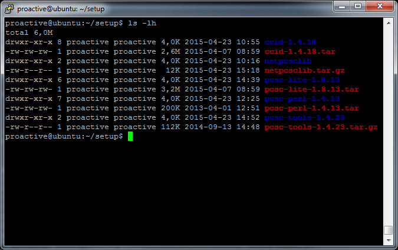
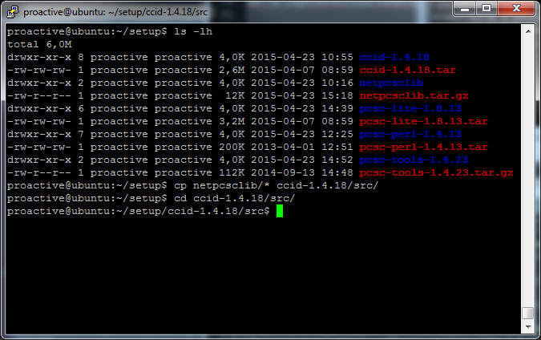
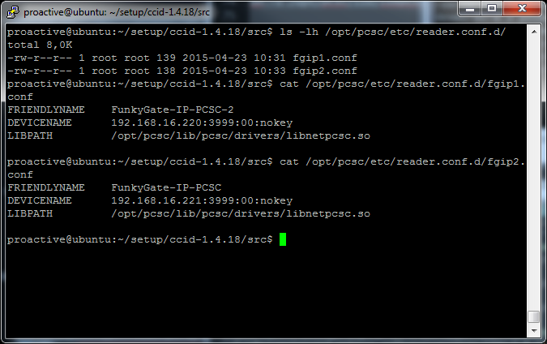
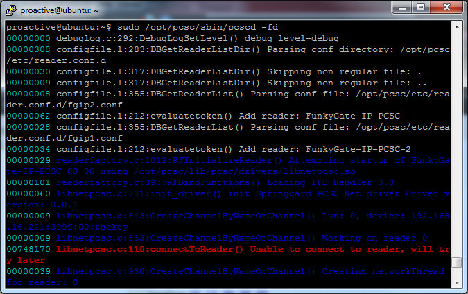
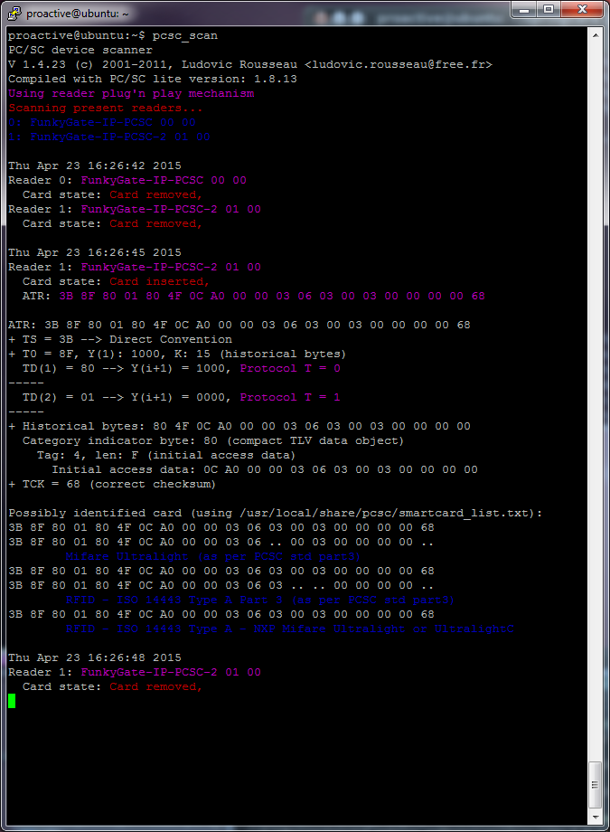

Networked PC/SC under Unix/Linux with PCSC-Lite and Springcard's FunkyGate IP PCSC
Products in the SpringCard FunkyGate-IP-PCSC Family
This makes those products usable on non-Windows operating systems thanks to PCSC-Lite CCID driver.
Introduction
PC/SC standard
PC/SC is the de-facto standard to interface Personal Computers with Smart Cards (and smartcard readers of course). Even if PC/SC has been initialy promoted by Microsoft -and has been implemented for long in Windows-, the standard is not limited to MS’ operating systems.
PCSC-Lite is an open source implementation of PC/SC, part of a global project named MUSCLE (Movement for the Use of Smart Cards in a Linux Environment). Despite its name, the PC/SC stack offered by MUSCLE is not limited to GNU/Linux anymore. Their compatibility list now includes other popular UNIXes, including Apple Mac OS X and Solaris.
CCID standard
The USB CCID specification published by the USB Workgroup aims to normalize USB smartcard readers, in order to have a single driver (supplied once for all with the operating system) for virtually any reader from any manufacturer.
PCSC-Lite project includes an open source CCID driver. This driver has been tested with SpringCard CSB6 on GNU/Linux, and should work on the other operating systems targetted by the project.
The new "PCSC over Network Driver" library by Springcard bring access to compliant networked readers to the open source CCID driver.
Disclaimer and warning
There’s no relationship between SpringCard and the developers involved in the open source PCSC-Lite project.
Apart from this explanation page, SpringCard can’t provide any technical support related to PCSC-Lite middleware nor PCSC-Lite CCID driver.
FunkyGate-IP-PCSC Family on GNU/Linux
In this part we’re going to install PCSC-Lite and FunkyGate-IP-PCSC‘s drivers on Ubuntu 10.04 LTS and Raspbian 7.8. Some parts of the procedure may vary a little, depending on the GNU/Linux distribution you’re working with.
You must download and install the driver before connecting the product.
Download
You most download the required package : pcsclite.alioth.debian.org or ludovic.rousseau.free.fr/softwares/ to download PCSC-Lite, CCID Driver, PCSC-Tools and PCSC-perl :
PCSC-Lite : file named pcsc-lite-x.y.z.tar.bz2, “x.y.z” being the version number,
CCID driver : file named ccid-x.y.z.tar.bz2, “x.y.z” being the version number,
PCSC Tools : file named pcsc-tools-x.y.z.tar.bz2, “x.y.z” being the version number,
PCSC Perl : file named pcsc-perl-x.y.z.tar.bz2, “x.y.z” being the version number.
You will need to download Springcard's PCSC over Network Driver available ....somewhere....
Installation
Connect as root.
Download the required packages:
wget https://alioth.debian.org/frs/download.php/file/4126/pcsc-lite-1.8.13.tar.bz2
wget https://alioth.debian.org/frs/download.php/file/4111/ccid-1.4.18.tar.bz2
wget http://ludovic.rousseau.free.fr/softwares/pcsc-perl/pcsc-perl-1.4.13.tar.bz2
wget http://ludovic.rousseau.free.fr/softwares/pcsc-tools/pcsc-tools-1.4.23.tar.gz
wget http://files.springcard.com/springcard_ccid_tcp.taz.gz
Uncompress all archives.
tar xjf pcsc-lite-1.8.13.tar
tar xjf ccid-1.4.18.tar
tar xjf pcsc-perl-1.4.13.tar
tar xjf pcsc-tools-1.4.23.tar
tar xvfz springcard_ccid_tcp.tar.gz

N.B. : On Ubuntu (and on some other Linuxes), connecting as root is not possible. In this case, one must prefix every command by “sudo”, to gain root’s priviledges temporary.
Prepare the builds
Warning, on some Linux distributions, like Raspbian for example, the system comes with a pre installed lib but in an old version of pcsc-lite (for example an 1.8.3 or 1.8.5 version).
First uninstall all previous version of the above package before building and setting up the new ones.
Before to install pcsc-lite you should also verify that libusb is up to date and if necessary install the dev version :
apt-get install libudev-dev libusb-1.0-0-dev libusb-dev
In this documentation, all package will be setup in a specific directory (using the --prefix option) but you could build everything without this option.
Installing PCSC-Lite
Open a terminal and go to the directory where you have uncompressed PCSC-Lite.
Enter the commands :
cd pcsc-lite-1.8.13/
./configure --prefix=/opt/pcsc
make
make install
If the configure step fails with message error: usb.h not found, check that you have the libusb library installed. If needed, please install it, and then give the path to this library to the configuration script: ./configure LIBUSB_CFLAGS=....
On Ubuntu or Debian, you may alternatively use apt-get to download and install the libusb-dev package :
apt-get install libusb-dev
Update library path - make use of our new library:
rm /usr/lib/arm-linux-gnueabihf/libpcsclite.so.1 (only on Raspbian)
rm /lib/libpcsclite.so.1
ln -s /opt/pcsc/lib/libpcsclite.so.1.0.0 /lib/libpcsclite.so.1
Installing CCID driver
Open a terminal and go to the directory where you have uncompressed the CCID Driver archive. Enter the commands :
cd ../ccid-1.4.18/
./configure --prefix=/opt/pcsc PKG_CONFIG_PATH=/opt/pcsc/lib/pkgconfig/
make
make install
Installing PCSC Perl
Open a terminal and go to the directory where you have uncompressed the PCSC Perl module archive. Enter the commands :
cd ../pcsc-perl-1.4.13/
export PKG_CONFIG_PATH=/opt/pcsc/lib/pkgconfig/
perl Makefile.PL
make
make install
Installing PCSC Tools
Open a terminal and go to the directory where you have uncompressed the PCSC Tools utilities archive. Enter the commands :
cd ../pcsc-tools-1.4.23/
export PKG_CONFIG_PATH=/opt/pcsc/lib/pkgconfig/
make
make install
Change Info.plist
With some old Linux distributions, the file called info.plist is not up to date so you may have to change it to work with our readers.
Locate the file called Info.plist, for example with a command like this one :
sudo find / -name Info.plist
You will, for example, find it in /usr/local/lib/pcsc/drivers/ifd-ccid.bundle/Contents/Info.plist
Edit the file to add your product’s IDs.
You can refer to the section dedicated to Mac Os X to see what you need to change.
Installing PCSC over Network Driver
Open a terminal and go to the directory where you have uncompressed the PCSC over Network Driver archive and copy all files inf the ccid-x-y-z/src/ directory. Enter the commands :
cd ..
cp springcard_ccid_tcp/* ../ccid-x-y-z/src/
cmmod a+x build.sh
./build.sh
mkdir /opt/pcsc/etc/
mkdir /opt/pcsc/etc/reader.conf.d/

Create configuration files
You must create one configuration file per FunkyGate-IP-PCSC.
Those files must be saved in the reader configuration directory /opt/pcsc/etc/reader.conf.d/.
Each configuration must have those parameters :
- FRIENDLYNAME : a (near)human readable string describing the reader
- DEVICENAME : a colon-separated string containing network informations about your reader (IP:PORT:OPTION BYTE:KEY) :
- IP : your device IP address
- PORT : tcp port used to contact the reader
- OPTION BYTE : communication options (device dependant), default is 00
- KEY : depending on OPTION BYTE, default is nokey
- LIBPATH : full path to the PCSC over Network Driver library file

Enabling PCSC-Lite daemon
PCSC-Lite’s pcscd process must be running in the background.
PCSC-Lite’s pcscd process must be running under an elevated user (root for example).
If you have some problems with the daemon you can launch it this way to see some error messages : pcscd -fd
If you see some error messages related to “permission denied”, try to launch make fix-rights from the folder where you have downloaded pcsc-lite (use sudo if necessary).
Starting pcscd manually
Open a terminal and go to the directory where PCSC-Lite has been installed. Typically, this is /usr/local/sbin/pcscd.
In this directory, enter the command ./pcscd.
Configuring pcscd to be launched on startup
It is better to have pcscd automatically started when the computer starts. To do so, you must add pcscd in the list of processes started in rc.local or equivalent startup script.
Connecting the device
Plug your "configured" reader onto the network.
In a terminal, use the command pcsc_scan to verify that your device is present :
In the above screenshot, we have two FunkyGate-IP-PCSC connected.
Validating the installation
To test the newly installed reader, we could pcsc_scan, just bring a card on the reader and you should view activity on you terminal :

We can also use gscriptor (the graphical version of included scriptor) for validation.
Card connect
Select the contactless slot of your reader,
Put any compliant contactless card on the reader,
Connect to the card (Reader -> Connect).
APDU exchange
Write the APDU command in the script panel. You may use the command FF CA 00 00 00 (get card serial number) as a test.
Click Run. Observe card’s response in the result panel.
Well, in this test this not actually a response from the card… The command FFCA000000 is interpreted by the reader (CLA=FF is reserved for the embedded APDU interpreter), so it is the reader that actually answers. The returned data are the serial number of the contactless card. Remember, we’ve put ‘any’ contactless card on the reader, and querying the serial number is more or less the only command that is available for any kind of card…
Troubleshooting
If invoking gscriptor fails with message Can't locate Chipcard/PCSC.pm, re-install PCSC-Perl and/or verify PERL’s include directories.